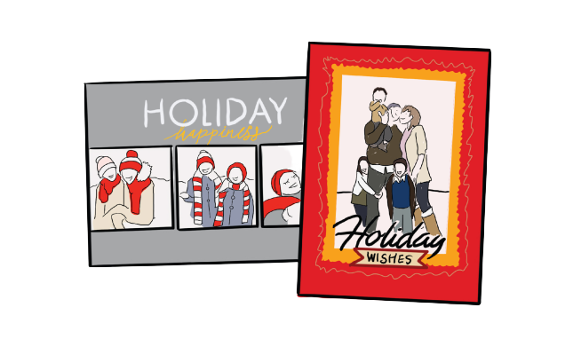
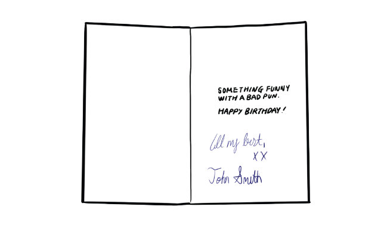
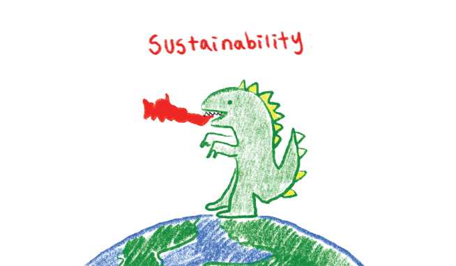

"Card giving culture is odd."
First off, when you are writing something, I think the message should be from the bottom of your heart. Something sweet and personal, not a generic printed message from $3.99 Hallmark cards. I had culture shock when I learned that there are people who just “sign” their names on the cards and give it to their friends. It felt wrong.
Why don’t they just “give” the empty cards? It’s like killing two birds in one stone. The recipients will get your message, and they can reuse the cards for later, ultimately saving the earth from the meaningless print-outs.
And again, am I supposed to keep them forever? Should I sharpie their names out when I throw them away? One day, I wish people will find out card-giving culture is superficial, and start giving each other something small but practical — like a box of Emergen-C or Neosporin — and sign their names on top.